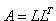

3.2.5. Cholesky Yöntemi İle Denklem Sistemlerinin Çözümü
Simetrik A matrisini  biçiminde ayrıştırabileceğimizi biliyoruz. Bu özellikten yararlanarak bir denklem sisteminin katsayılar matrisinin simetrik matris olma durumunda köklerini hesaplayabiliriz.

Denklem sistemi için,
yazabiliriz. Öte yandan,
dönüşümü yapılırsa (3.15) denklem sistemi,
biçimine dönüşmüş olur. L matrisi bir alt üçgen matris olduğuna göre, denklem sistemi birinci satırından itibaren yerine koyma yöntemiyle çözülür. Ardından, elde edilen çözüm (3.16) de kullanılarak x çözüm vektörü elde edilir.